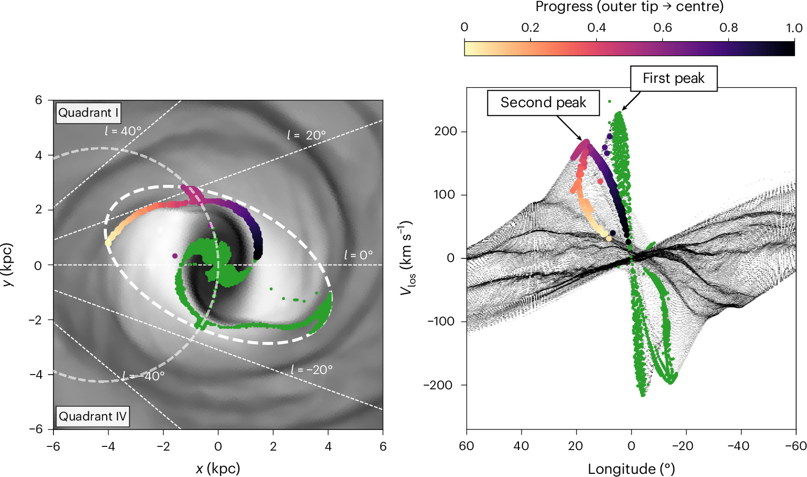

銀河の内側から地図を作る
私たちは天の川銀河の内部にいるため、銀河全体を真上から眺めることができません。渦状腕の形を調べるには、星やガスまでの距離と、それらがどの方向にどのくらいの速さで動いているかを測る必要があります。ここで力を発揮するのが天体メーザーです。若い大質量星の周囲には、分子が特定の周波数の電波を強く増幅する領域があります。遠く離れた電波望遠鏡を組み合わせる超長基線電波干渉法では、こうした小さく明るい電波源の年周視差を測定できます。
棒状構造の近くでガスが圧縮される
棒渦巻銀河の中心付近では、星が細長い棒状の構造を作っています。その重力のもとでガスが運動すると、流れが急激に変わり、ガスが圧縮される衝撃波が生じます。そこに塵やガスが集まれば、外部の銀河では帯状の暗い領域として見えることがあります。



図を原寸で拡大する
Davisらは星の重力とガスの運動を扱う数値計算を行い、従来ノルマ腕に対応づけられていたメーザーの分布と比較しました。原著の図5では、銀河面内の位置に加え、空の上の銀経と視線速度の関係についても、観測と計算を比較しています。両者を合わせると、棒状構造の縁にある衝撃波の分布がメーザーの位置と速度をよく説明するというのが著者らの主張です。
その比較から推定された棒状構造の長半軸は約4.3±0.2キロパーセクです。中心から端まで約1万4千光年に相当します。短半軸は約2.3±0.2キロパーセク、傾きは約20度で、回転する模様の角速度も比較的低い値が支持されています。


図を原寸で拡大する
星の誕生に伴うメーザーが衝撃波に沿っているとすれば、棒状構造に沿うガスの流れの中でも星形成が起こっていることになります。ただし、今回の比較は特定のメーザー群と数値モデルに基づくもので、ノルマ腕と呼ばれてきた構造全体の存在を否定する結果とまでは言えません。銀河の地図に描かれた線が、どのような運動をするガスの集まりなのかという、銀河構造の物理的な問題が浮かび上がっています。